从kubectl top看K8S监控原理
1 前言
kubectl top 可以很方便地查看node、pod的实时资源使用情况：如CPU、内存。这篇文章会介绍其数据链路和实现原理，同时借kubectl top 阐述 k8s 中的监控体系，窥一斑而知全豹。最后会解释常见的一些问题：
- kubectl top 为什么会报错？
- kubectl top node 怎么计算，和节点上直接 top 有什么区别？
- kubectl top pod 怎么计算，包含 pause 吗？
- kubectl top pod 和exec 进入 pod 后看到的 top 不一样？
- kubectl top pod 和 docker stats得到的值为什么不同？
2 使用
kubectl top 是基础命令，但是需要部署配套的组件才能获取到监控值
- 1.8以下：部署
heapter - 1.8以上：部署
metric-server
2-1 安装
helm install metric ./metrics-server --namespace kube-system
kubectl edit deployment metric-metrics-server -n kube-system
...
args:
- --kubelet-insecure-tls
- --kubelet-preferred-address-types=InternalIP,ExternalIP,Hostname
...
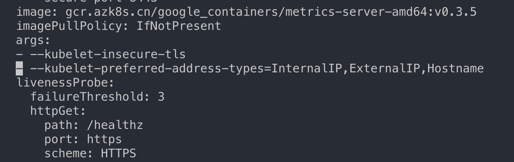
$ kubectl top nodes
NAME CPU(cores) CPU% MEMORY(bytes) MEMORY%
docker-desktop 499m 12% 2198Mi 27%
kubectl top pod: 查看 pod 的使用情况
$ kubectl top pods
NAME CPU(cores) MEMORY(bytes)
dark-57c5c58bf8-llxqj 1m 4Mi
$ kubectl top pod kfk-zookeeper-0 -n kafka
NAME CPU(cores) MEMORY(bytes)
kfk-zookeeper-0 3m 187Mi
$ kubectl top pod kfk-zookeeper-0 -n kafka --containers
POD NAME CPU(cores) MEMORY(bytes)
kfk-zookeeper-0 zookeeper 3m 187Mi
指标含义：
- 和
k8s中的request、limit一致，CPU单位100m=0.1内存单位1Mi=1024Ki pod的内存值是其实际使用量，也是做limit限制时判断oom的依据。pod的使用量等于其所有业务容器的总和，不包括pause容器，值等于cadvisr中的container_memory_working_set_bytes指标node的值并不等于该node上所有pod值的总和，也不等于直接在机器上运行top或free看到的值
3 实现原理
3.1 数据链路
kubectl top 、 k8s dashboard 以及 HPA等调度组件使用的数据是一样，数据链路如下：
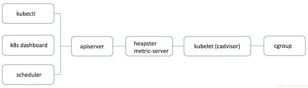
使用 heapster 时：apiserver 会直接将metric请求通过proxy的方式转发给集群内的 hepaster 服务。
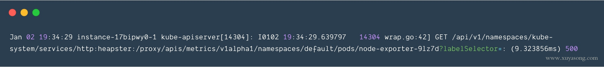
而使用 metrics-server 时：apiserver是通过/apis/metrics.k8s.io/的地址访问metric
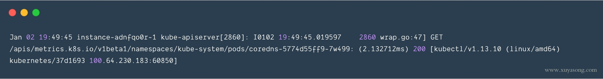
这里可以对比下kubect get pod时的日志：
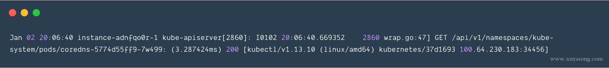
3.2 metric api
可以发现，heapster使用的是 proxy转发，而 metric-server和普通 pod都是使用 api/xx 的资源接口，heapster采用的这种 proxy方式是有问题的：
proxy只是代理请求，一般用于问题排查，不够稳定，且版本不可控heapster的接口不能像apiserver一样有完整的鉴权以及client集成，两边都维护的话代价高，如generic apiserver）pod的监控数据是核心指标（HPA调度），应该和pod本身拥有同等地位，即metric应该作为一种资源存在，如metrics.k8s.io的形式，称之为Metric Api
于是官方从 1.8 版本开始逐步废弃 heapster，并提出了上边Metric api的概念，而metrics-server 就是这种概念下官方的一种实现，用于从 kubelet获取指标，替换掉之前的heapster
3.3 kube-aggregator
有了metrics-server组件，采集到了需要的数据，也暴露了接口，但走到这一步和 heapster 其实没有区别，最关键的一步就是如何将打到apiserver的/apis/metrics.k8s.io请求转发给metrics-server组件？
解决方案就是：kube-aggregator。
kube-aggregator是对 apiserver的有力扩展，它允许k8s的开发人员编写一个自己的服务，并把这个服务注册到k8s的api里面，即扩展 API，metric-server其实在1.7版本就已经完成了，只是在等kube-aggregator的出现。
kube-aggregator是 apiserver 中的实现，有些 k8s 版本默认没开启，你可以加上这些配置 来开启。他的核心功能是动态注册、发现汇总、安全代理。
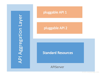
如 metric-server 注册 pod 和 node 时:
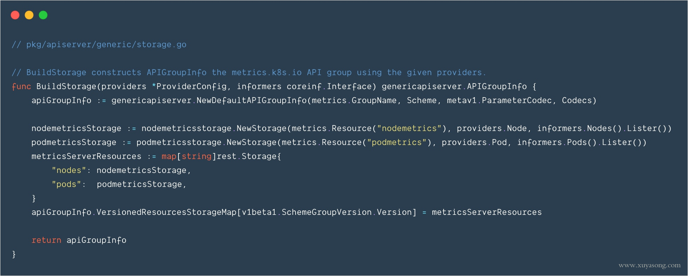
3.4 监控体系
在提出 metric api 的概念时，官方也提出了新的监控体系，监控资源被分为了2种：
Core metrics(核心指标)：从Kubelet、cAdvisor等获取度量数据，再由metrics-server提供给Dashboard、HPA控制器等使用。Custom Metrics(自定义指标)：由Prometheus Adapter提供API custom.metrics.k8s.io，由此可支持任意Prometheus采集到的指标。
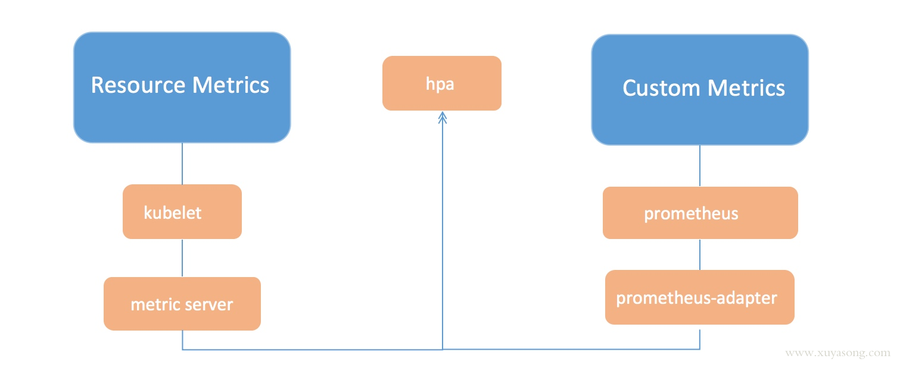
核心指标只包含node和pod的cpu、内存等，一般来说，核心指标作HPA已经足够，但如果想根据自定义指标:如请求qps/5xx错误数来实现HPA，就需要使用自定义指标了。
目前Kubernetes中自定义指标一般由Prometheus来提供，再利用k8s-prometheus-adpater聚合到apiserver，实现和核心指标（metric-server)同样的效果。
3.5 kubelet
前面提到，无论是 heapster还是 metric-server，都只是数据的中转和聚合，两者都是调用的 kubelet 的 api接口获取的数据，而 kubelet 代码中实际采集指标的是 cadvisor 模块，你可以在 node 节点访问 10255 端口 （read-only-port)获取监控数据：
Kubelet Summary metrics: 127.0.0.1:10255/metrics，暴露node、pod汇总数据Cadvisor metrics: 127.0.0.1:10255/metrics/cadvisor，暴露container维度数据
示例，容器的内存使用量：
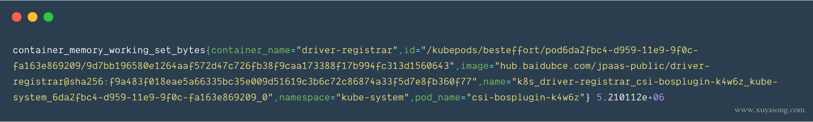
kubelet虽然提供了metric 接口，但实际监控逻辑由内置的cAdvisor模块负责，演变过程如下：
- 从
k8s 1.6开始，kubernetes将cAdvisor开始集成在kubelet中，不需要单独配置 - 从
k8s 1.7开始，Kubelet metrics API不再包含cadvisor metrics，而是提供了一个独立的API接口来做汇总 - 从
k8s 1.12开始，cadvisor监听的端口在k8s中被删除，所有监控数据统一由Kubelet的API提供
到这里为止，k8s范围内的监控体系就结束了，如果你想继续了解cadvisor和 cgroup 的内容，可以向下阅读
3.6 cadvisor
cadvisor由谷歌开源，使用Go开发，项目地址也是google/cadvisor，cadvisor不仅可以搜集一台机器上所有运行的容器信息，包括CPU使用情况、内存使用情况、网络吞吐量及文件系统使用情况，还提供基础查询界面和http接口，方便其他组件进行数据抓取。在K8S中集成在Kubelet里作为默认启动项，k8s官方标配。
cadvisor 拿到的数据结构示例：
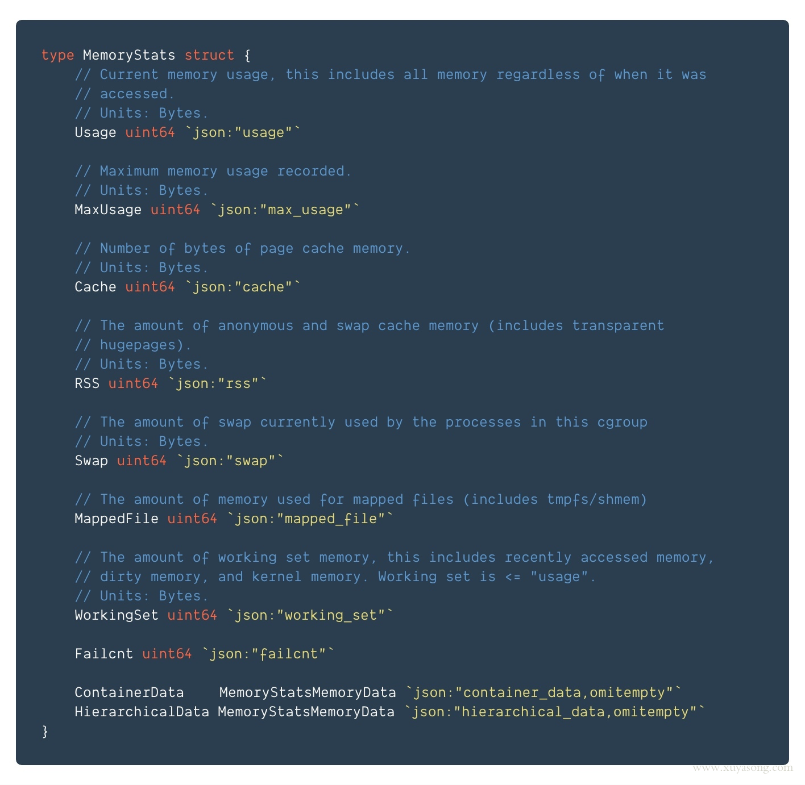
核心逻辑：
通过new出来的memoryStorage以及sysfs实例，创建一个manager实例，manager的interface中定义了许多用于获取容器和machine信息的函数
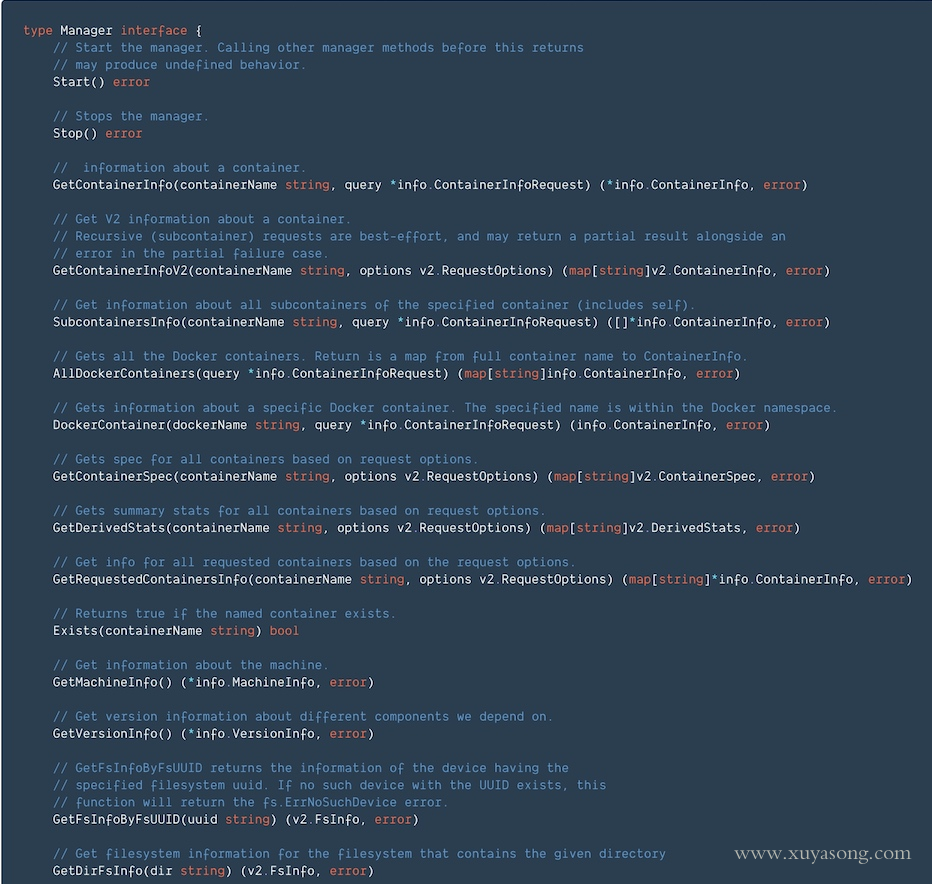
cadvisor的指标解读：cgroup-v1
cadvisor获取指标时实际调用的是 runc/libcontainer库，而libcontainer是对cgroup文件 的封装，即 cadvsior也只是个转发者，它的数据来自于cgroup文件。
3.7 cgroup
cgroup文件中的值是监控数据的最终来源，如
mem usage的值，来自于/sys/fs/cgroup/memory/docker/[containerId]/memory.usage_in_bytes- 如果没限制内存，
Limit = machine_mem，否则来自于/sys/fs/cgroup/memory/docker/[id]/memory.limit_in_bytes - 内存使用率
= memory.usage_in_bytes/memory.limit_in_bytes
一般情况下，cgroup文件夹下的内容包括CPU、内存、磁盘、网络等信息：
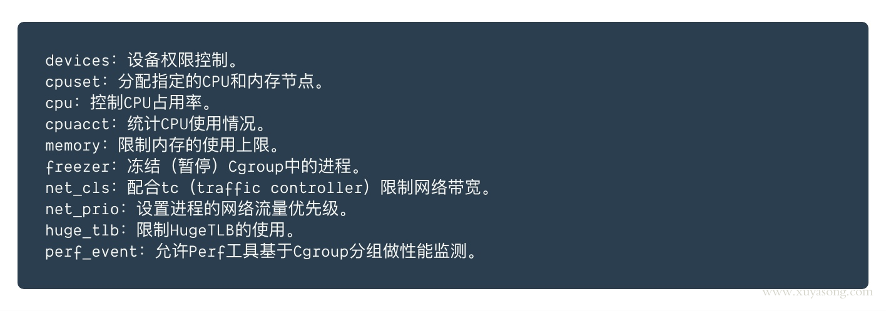
如memory下的几个常用的指标含义：
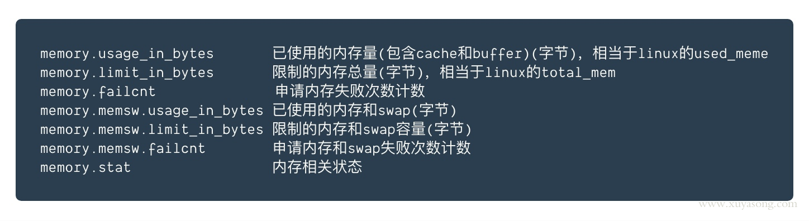
memory.stat中的信息是最全的：
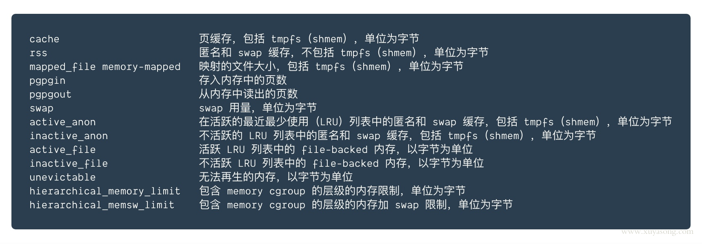
原理到这里结束，这里解释下最开始的kubectl top 的几个问题：
四. 问题
4.1 kubectl top 为什么会报错
一般情况下 top 报错有以下几种，可以 kubectl top pod -v=10看到具体的调用日志:
- 没有部署
heapster或者metric-server，或者pod运行异常，可以排查对应pod日志 - 要看的
pod刚刚建出来，还没来得及采集指标，报not found错误，默认1分钟 - 以上两种都不是，可以检查下
kubelet的10255端口是否开放，默认情况下会使用这个只读端口获取指标，也可以在heapster或metric-server的配置中增加证书，换成10250认证端口
4.2 kubectl top pod 内存怎么计算，包含 pause容器吗
每次启动pod，都会有一个 pause 容器，既然是容器就一定有资源消耗（一般在 2-3M 的内存），cgroup 文件中，业务容器和pause 容器都在同一个 pod的文件夹下。
但 cadvisor 在查询 pod 的内存使用量时，是先获取了 pod 下的container列表，再逐个获取container的内存占用，不过这里的 container列表并没有包含pause，因此最终top pod 的结果也不包含 pause 容器
pod 的内存使用量计算
kubectl top pod 得到的内存使用量，并不是cadvisor 中的container_memory_usage_bytes，而是container_memory_working_set_bytes，计算方式为：
container_memory_usage_bytes == container_memory_rss + container_memory_cache + kernel memorycontainer_memory_working_set_bytes = container_memory_usage_bytes – total_inactive_file（未激活的匿名缓存页）
container_memory_working_set_bytes是容器真实使用的内存量，也是limit限制时的 oom 判断依据
cadvisor中的 container_memory_usage_bytes对应 cgroup 中的 memory.usage_in_bytes文件，但container_memory_working_set_bytes并没有具体的文件，他的计算逻辑在 cadvisor 的代码中，如下：
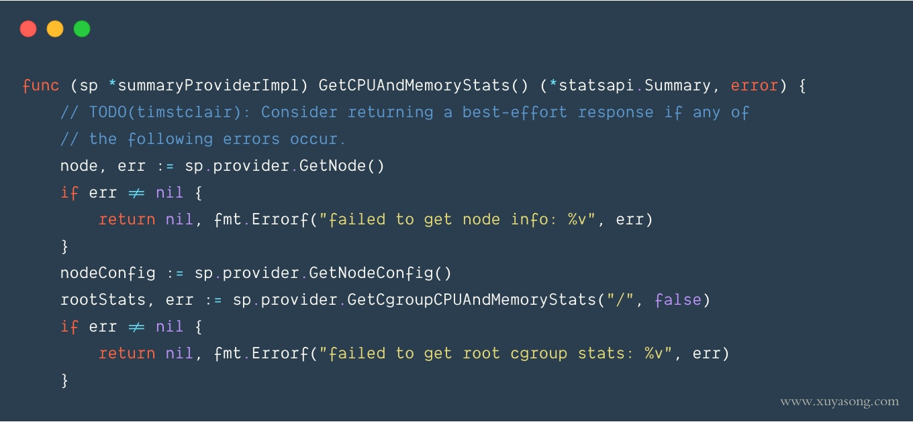
同理，node 的内存使用量也是container_memory_working_set_bytes
4.3 kubectl top node 怎么计算，和节点上直接 top 有什么区别
kubectl top node得到的 cpu 和内存值，并不是节点上所有 pod 的总和，不要直接相加。top node是机器上cgroup根目录下的汇总统计
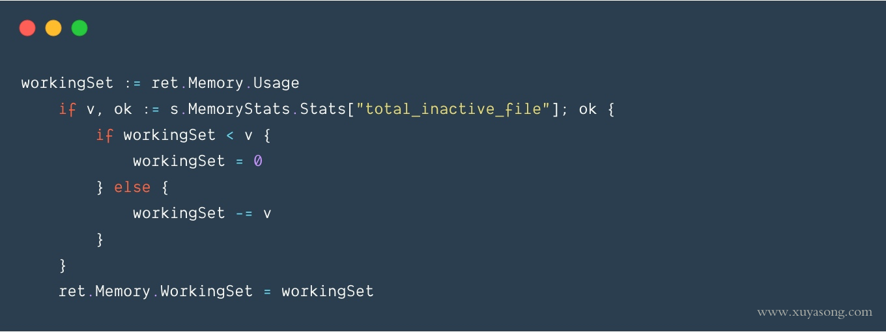
在机器上直接 top命令看到的值和kubectl top node不能直接对比，因为计算逻辑不同，如内存，大致的对应关系是(前者是机器上 top，后者是kubectl top):
rss + cache = (in)active_anon + (in)active_file
4.4 kubectl top pod 和exec 进入 pod 后看到的 top 不一样
top命令的差异和上边 一致，无法直接对比，同时，就算你对 pod 做了limit 限制，pod 内的 top 看到的内存和 cpu总量仍然是机器总量，并不是pod 可分配量
- 进程的
RSS为进程使用的所有物理内存（file_rss＋anon_rss），即Anonymous pages＋Mapped apges（包含共享内存） cgroup RSS为（anonymous and swap cache memory），不包含共享内存。两者都不包含file cache
4.5 kubectl top pod 和 docker stats得到的值为什么不同？
docker stats dockerID 可以看到容器当前的使用量：
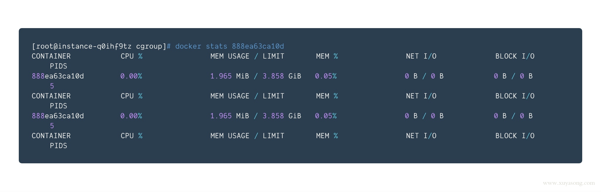
如果你的 pod中只有一个 container，你会发现docker stats值不等于kubectl top 的值，既不等于container_memory_usage_bytes，也不等于container_memory_working_set_bytes。
因为docker stats 和 cadvisor 的计算方式不同，总体值会小于kubectl top：计算逻辑是：
docker stats = container_memory_usage_bytes - container_memory_cache
五. 后记
一般情况下，我们并不需要时刻关心node 或 pod 的使用量，因为有集群自动扩缩容(cluster-autoscaler)和pod 水平扩缩容（HPA）来应对这两种资源变化，资源指标的意义更适合使用prometheus来持久化cadvisor的数据，用于回溯历史或者发送报警。
其他补充：
- 虽然
kubectl top help中显示支持Storage，但直到 1.16 版本仍然不支持 - 1.13 之前需要 heapster，1.13 以后需要
metric-server，这部分kubectl top help的输出 有误，里面只提到了heapster k8s dashboard中的监控图默认使用的是heapster，切换为metric-server后数据会异常，需要多部署一个metric-server-scraper的pod来做接口转换，具体参考 pr：https://github.com/kubernetes/dashboard/pull/3504